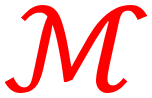

Hello!
My name is Joann-Matthew Means, and I use they/them pronouns. This is my website where I post personal projects. Take a look and see if there’s anything you find useful.
I’m currently a Materials Science and Engineering student at UC Irvine. If you’re looking to connect, send me a request on Linkedin

How I Prefer To Be Referred To
I like to be called Joann some days and Jonathan on other days. I will wear a pink wristband on my left wrist during "Joann" days and a blue wristband during "Jonathan" days.
I am fine with you using my legal name (Jonathan Means) if it is necessary. However, I greatly appreciate it if you can refer to me as "Joann-Jonathan in emails, meetings, and other contexts where my legal name is not strictly necessary. Feel free to link to this page directly if others ask about my name.
I use they/them pronouns. If it helps, you can imagine that I'm a pair of conjoined twins.
For example:
- They sent in their resume yesterday.
- I talked to them in an interview.
- Their resume is formatted well.
If you make a mistake, I may correct you. This isn't a personal judgement, just repeat what you said and fix the pronouns.
I hope you found this page helpful. I'm happy to answer questions about my name or pronouns as they come up!
A Simple Timer (Open)
I was tired of having to use different timer apps on all of my devices, so I made my own, and added some extra features I thought would be useful.
The buttons in the first row change the amount of time the timer is set for. The buttons in the second row are toggles: one makes it so the buttons subtract time instead of add it, and the other makes it so that the buttons add or subtract more time per press. The third row allows you to set the timer until a certain time, although this may not work on some browsers. The fourth line allows you to start, stop, and clear the timer.
Unicode Tablet (Open)
There are lots of useful Unicode symbols, but it’s annoying to have to look them up and copy them or memorize the character codes. I made this page to have quick access to a number of symbols that I frequently use. Because they are Unicode, they can be used in both plain text and rich text across any platform.
Click any of the squares with symbols on them to copy that symbol. Selecting “buttons type,” instead of the default “buttons copy,” will let you type multiple symbols into the textbox at a time. For example, to type “2x²≠¼”, select “buttons type,” type “2x” on your keyboard, and then ², ≠, and ¼ using the onscreen buttons.

Math Letters (Open)
This is more of a fun project that I made so that I could add emphasis or special formatting to text messages and other plain text fields that don’t allow for formatting.
Type your text in the top box, then select your desired formatting using the options below. If the convert button deactivates/is greyed out, there aren’t appropriate Unicode characters to make the conversion.
Sliding Puzzle
I couldn’t remember the URL to Simon Tatham's Portable Puzzle Collection, but I still wanted to play the sliding number puzzle, so I made this!
I also adapted the same code to make 3 virtual mothers day cards
Original Puzzle
Virtual Mother's Day cards
Repeating text
This is definitely just a fun project. Maybe I’m just easily amused, but there’s something really funny about seeing the page print out the same word over and over again.
Yes
No
I'm Suffering
Custom